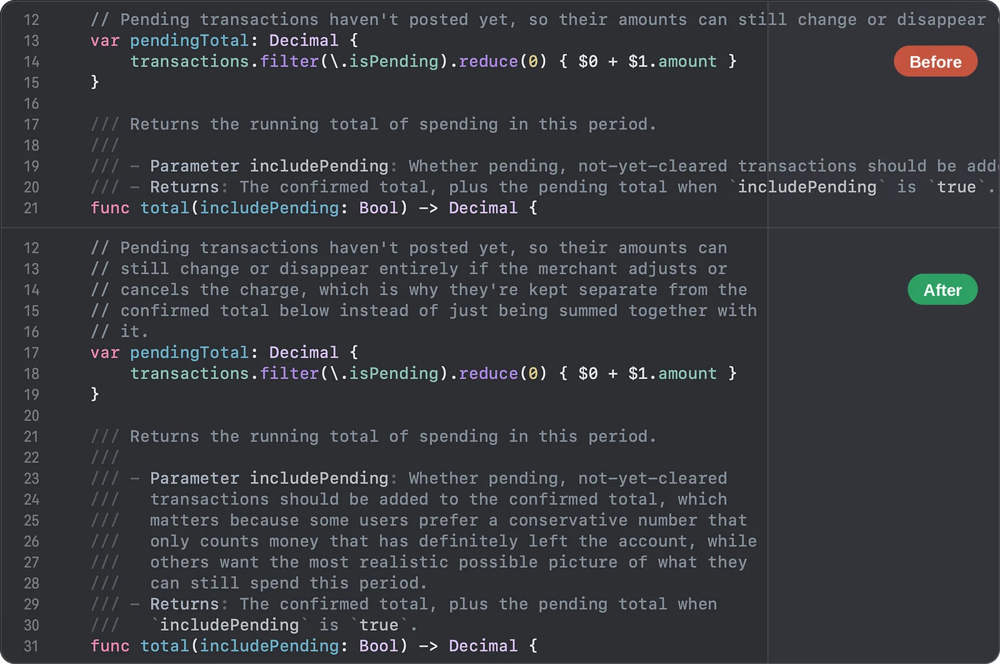
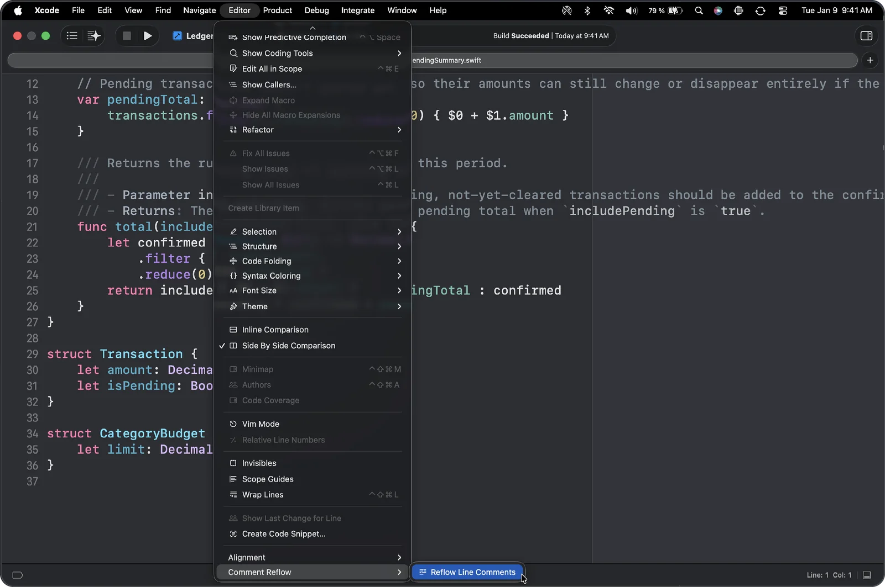
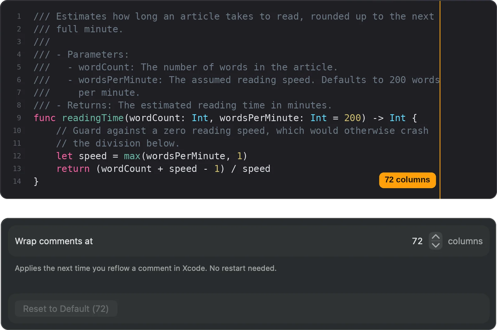
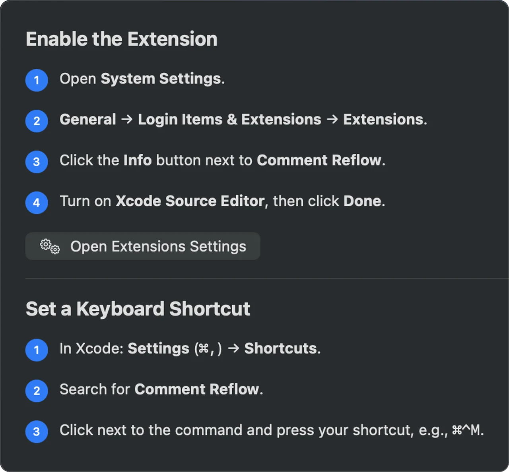

Tidy Comments in One Keystroke
Comment Reflow rewraps long // and /// DocC comments in Xcode to the line width you choose — with indentation, comment markers, and DocC structure intact. Free, private, no account.

Stop re-wrapping comments by hand. Comment Reflow is an Xcode Source Editor Extension for macOS that reflows // line comments and /// DocC documentation comments in one command. Paste a long comment, edit a single word in a parameter description, or clean up an entire file — every line is wrapped to your column width, and your code is never touched.
Ready to tidy your comments? Download Comment Reflow today.
Why Choose Comment Reflow
- Built for Swift & DocC — Parameter lists, bullet points, code blocks, and callouts are re-wrapped correctly, with their structure and indentation preserved on every line.
- One Command — Run “Reflow Line Comments” from Xcode’s Editor menu or assign your own keyboard shortcut.
- Your Line Width — Wrap at 72 columns by default, or pick any width that matches your team’s style.
- 100% Private — Comment Reflow runs entirely on your Mac. Your source code is never sent anywhere. No ads, no tracking, no account.
Right Where You’d Expect It
A lightweight Xcode Source Editor Extension that feels like part of Xcode itself.
Editor Menu Command
Find Reflow Line Comments under Editor → Comment Reflow. Place your cursor in a comment, or select part of one, and run the command.
Your Own Keyboard Shortcut
Assign any shortcut in Xcode’s Settings under Shortcuts and reflow without leaving the keyboard.
One Comment, a Selection, or a Whole File
Select a larger range — even an entire file — to reflow every comment block inside it in one pass, while your actual code stays untouched.

Wrap at Your Line Width
Match your team’s style guide or line-length limit.
Any Column Width
Pick the column width your comments should wrap at. The default is 72 characters, a classic choice for readable documentation comments.
Applies Immediately
A new width takes effect the next time you reflow a comment in Xcode. No restart needed, and you can reset to the default at any time.

Key Features for Your Comments
- Line & DocC Comments — Reflows both
//line comments and///DocC documentation comments. - Structure-Aware Wrapping — Keeps parameters, returns, bullet lists, code blocks, and callouts correctly formatted when lines are re-wrapped.
- Indentation & Markers Preserved — Every wrapped line keeps its indentation and comment marker, so nested code stays tidy.
- Multiple Comment Blocks at Once — Reflow a selection or a whole file in a single command.
- No Project Changes — Works as an Xcode extension, with no changes to your project files or build settings.
Set Up in Under a Minute
Enable the extension once, and it’s ready in every Xcode project.
Enable the Extension
Open the app once and follow the Setup tab to turn on the Xcode Source Editor extension in System Settings.
Add a Shortcut (Optional)
Assign your own keyboard shortcut to the command in Xcode, or just use the Editor menu.
Runs Locally on Your Mac
Your code is never sent anywhere.

Private by Design
No ads. No tracking. No account.
Comment Reflow works entirely on your Mac. Your source code is processed in memory only while you run a command, and is never stored or sent anywhere.
Free to download and use.
Clear & Effective
Whether you paste a long comment into Swift code, edit one word in a DocC parameter description, or enforce a consistent line width across a file, Comment Reflow gives you clean, readable comments with a single command.
The best developer tools get out of your way. That’s Comment Reflow — no windows to manage, no settings to fight with, just tidy comments in Xcode.